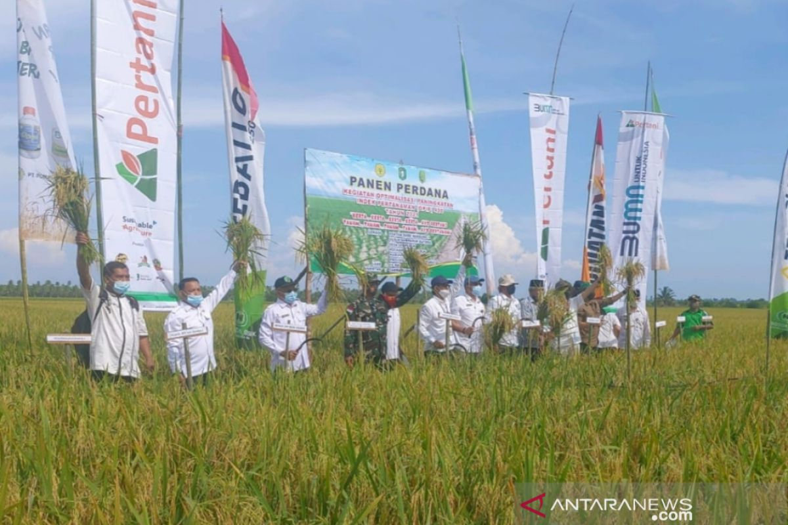
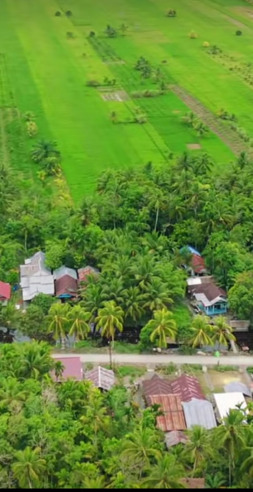
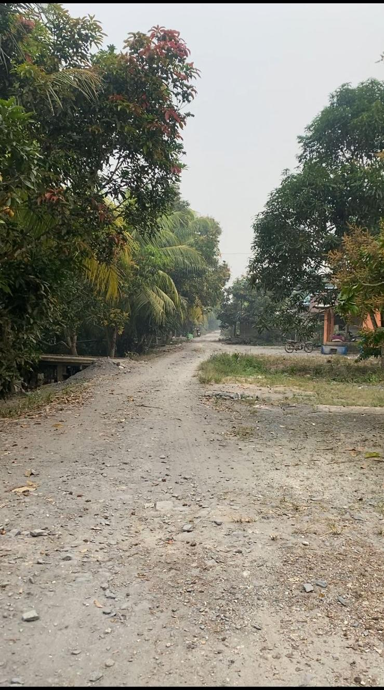

Mengenal potensi yang dimiliki Dusun Permai
Potensi alam dan kegiatan masyarakat.

Lahan pertanian menjadi salah satu potensi yang dapat dikembangkan oleh masyarakat.

Lahan yang luas dapat dimanfaatkan untuk kegiatan pertanian dan kegiatan produktif lainnya.

Lingkungan hijau dan suasana pedesaan menjadi salah satu daya tarik Dusun Permai.